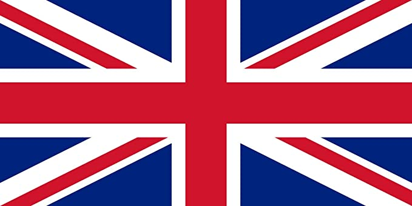
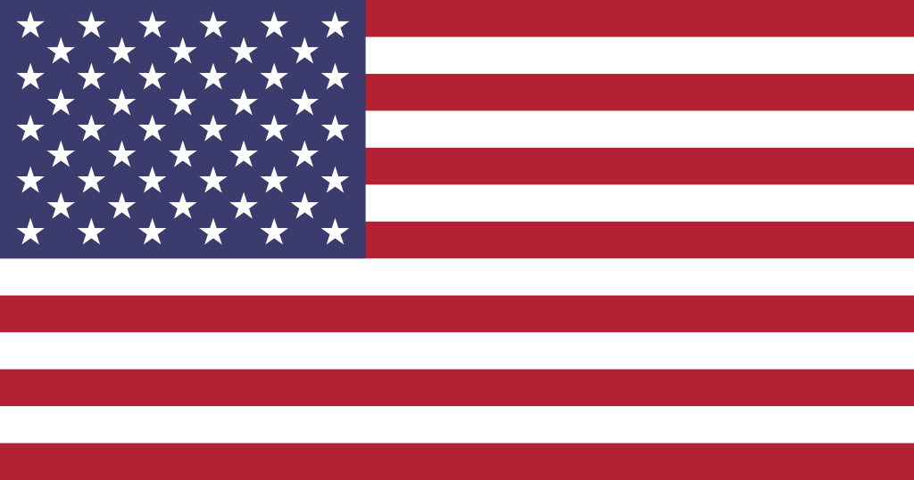

Les tournois compétitifs
Les tournois du Grand Chelem sont quatre tournois majeurs des calendriers professionnels, ils sont cependant organisés par l'ITF (International Tennis Federation) et non par l'ATP (Association of Tennis Professionals)
| Période | Tournoi | Lieu | Surface |
| Janvier | Internationaux d'Australie (Open d'Australie) |
Melbourne,  Australie Australie
|
Surface dure (béton) |
| Mai-Juin | Internationaux de France (Roland Garros) | Paris, France | Terre battue |
| Juillet | Internationaux de Grande-Bretagne (Wimbledon) | Londres,  Royaume-Uni | Gazon |
| Août-Septembre | Internationaux des Etats-Unis (US Open) | New York,  Etats-Unis | Surface dure (béton) |
Les Masters 1000 sont une série de neuf tournois annuels qui se déroulent en Europe ou en Amérique du Nord, organisés par l'ATP (Association of Tennis Professionals)